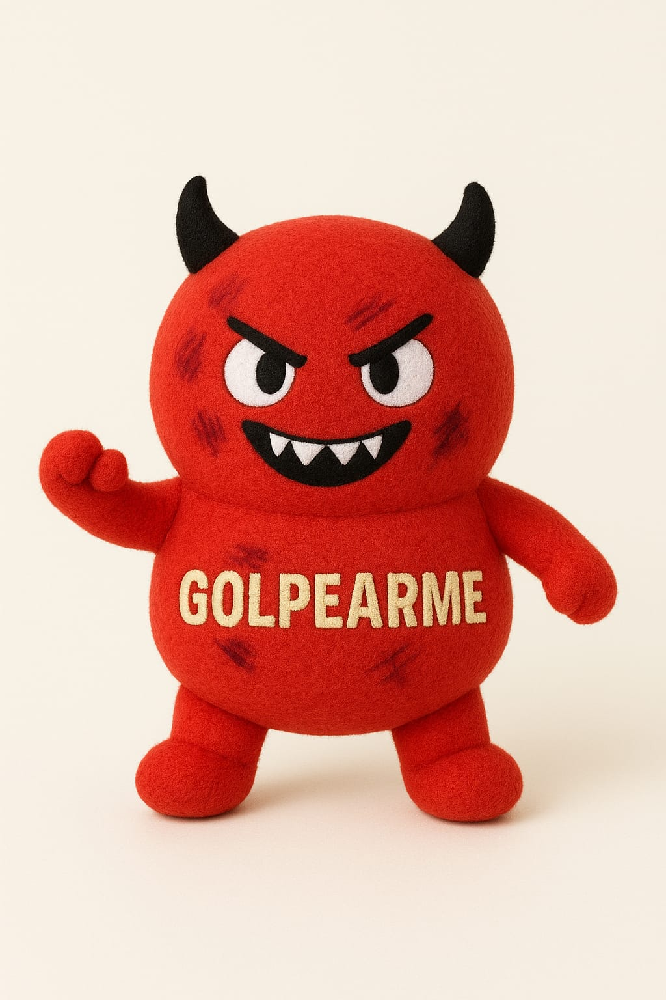
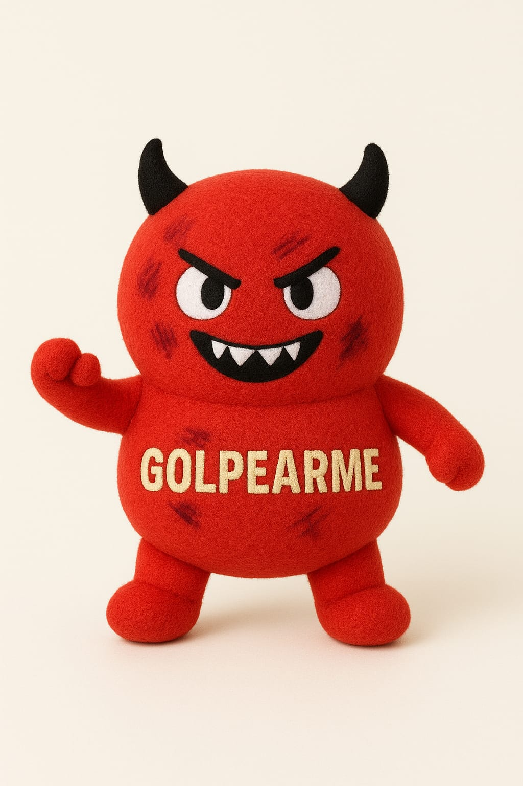

Nuestra Historia
CalmMode nació en 2024 a partir de un interés genuino por la salud mental. Para nosotros, no es solo un tema de estudio: es una preocupación real por el bienestar de los jóvenes, un grupo especialmente vulnerable frente a la ansiedad, la depresión y otros desafíos emocionales. Aunque no somos profesionales de la psicología, creemos que también desde la cercanía y la empatía se puede aportar. Por eso, nuestro proyecto se diferencia en algo clave: ofrecemos un trato de tú a tú, en un espacio seguro y anónimo, donde cada persona puede expresarse sin miedo a juicios ni a que su historia se haga pública. Nuestro objetivo es crecer y evolucionar. En cinco años, aspiramos a consolidarnos como una empresa influyente en la comunidad de la salud mental, ampliando nuestro equipo e integrando profesionales de la psicología para fortalecer lo que hoy es un espacio de apoyo humano, cercano y confiable. .

 
